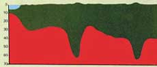
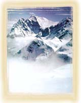

DAÐLARI GÖREVÝ
Kuran'da daðlarýn önemli bir jeolojik iþlevine dikkat çekilmektedir:
“Yeryüzünde, onlarý sarsmasýn diye, sabit daðlar yarattýk...„
(Enbiya Suresi, 31)
Dikkat
edilirse ayette, daðlarýn yeryüzündeki sarsýntýlarý önleyici bir özelliðinin
olduðu haber verilmektedir.
 Þematik kesit. |
Daðlarýn toprak seviyesinin oldukça
derinlerinde kökleri vardýr.
(EARTH, Press and Siever, s.413) |
| Kazýk þerkilnedik daðlarýn topraðýn
içerisine iyice yerleþmiþ kökleri vardýr.
(Anatomy of the Earth, Cailleux, s.220) |
|
| Daðlarýn derin kökleri dolayýsýyla þekil olarak kazýklara benzediklerini gösteren diðer bir resim. (EARTH SCIENCE, Tarbuck and Lutgens, s.158) |
Kuran'ýn indirildiði dönemde hiçbir insan tarafýndan bilinmeyen bu gerçek, günümüzde modern jeolojinin bulgularý sonucunda ortaya çýkarýlmýþtýr. Bu bulgulara göre, daðlar, yeryüzü kabuðunu oluþturan çok büyük tabakalarýn hareketleri ve çarpýþmalarý sonucunda meydana gelir.
Ýki tabaka çarpýþtýðý zaman daha dayanýklý olaný ötekinin altýna girer. Üstte kalan tabaka kývrýlarak yükselir ve daðlarý meydana getirir. Altta kalan tabaka ise yeraltýnda ilerleyerek aþaðýya doðru derin bir uzantý meydana getirir. Yani daðlarýn yeryüzünde gördüðümüz kütleleri kadar, yeraltýna doðru ilerleyen derin bir uzantýlarý daha vardýr. Bilimsel bir kaynakta daðlarýn bu yapýsý þöyle tarif edilir:
"Kýtalarýn daha kalýn olduðu daðlýk bölgelerde yerkabuðu mantoya derinlemesine saplanýr."
Bir
ayette, daðlarýn bu iþlevine, "kazýk" benzetmesi yapýlarak þöyle iþaret
edilir:
|
“Biz,
yeryüzünü bir döþek kýlmadýk mý?
Daðlarý da birer kazýk?„ (Nebe Suresi, 6-7) |
 |
Daðlar yer üstünde olduðu kadar yeraltýnýn derinliklerineki uzantýlarýyla da yerkabuðunun farklý tabakalarýný adeta birer kazýk gibi birbirine perçinler. Yerkabuðu sürekli hareket halinde olan tabakalardan oluþmaktadýr. Daðlarýn bu perçinleme özelliði son derece hareketli bir yapýsý olan yerkabuðunu adeta sabitleyerek sarsýntýlarý büyük ölçüde engeller. |
Bu özellikleri sayesinde daðlar, yeryüzü tabakalarýnýn birleþim noktalarýnda yer üstüne ve yeraltýna doðru uzanarak bu tabakalarý birbirine perçinler. Bu þekilde, yerkabuðunu sabitleyerek maðma tabakasý üzerinde ya da kendi tabakalarý arasýnda kaymasýný engeller. Kýsacasý daðlarý, tahtalarý birarada tutan çivilere benzetebiliriz.
Daðlarýn bu sabitleyici özelliði bilimsel literatürde "izostasi" terimiyle tanýmlanýr. Ýzostasi'nin kelime anlamý þöyledir:
"Ýzostasi: ... Jeolojide, daðlarýn Dünya yüzeyinin altýnda oluþturduklarý yerçekimsel kuvvet sayesinde yerkabuðunun genel dengesinin saðlanmasý."
Görüldüðü gibi, modern jeolojik ve sismik araþtýrmalar sonucunda keþfedilen daðlarýn çok hayati bir iþlevi, yüzyýllar önce indirilmiþ olan Kuran-ý Kerim'de Allah'ýn yaratmasýndaki üstün hikmete bir örnek olarak verilmiþtir. Bir baþka ayette þöyle buyrulur:
“... Arzda da, sizi sarsýntýya uðratýr diye sarsýlmaz daðlar býraktý...„
(Lokman Suresi, 10)